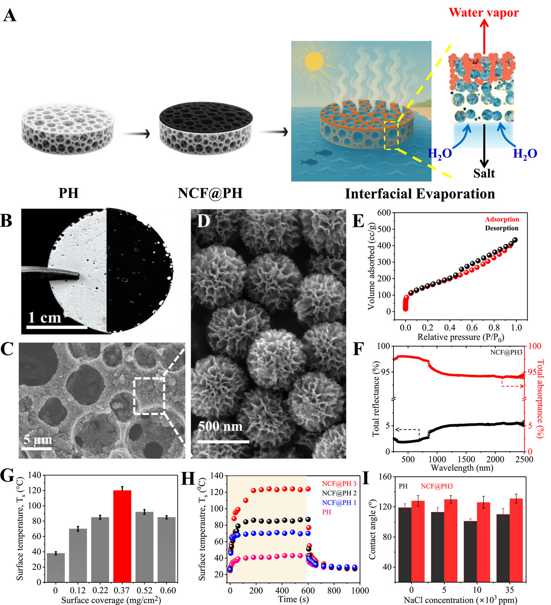
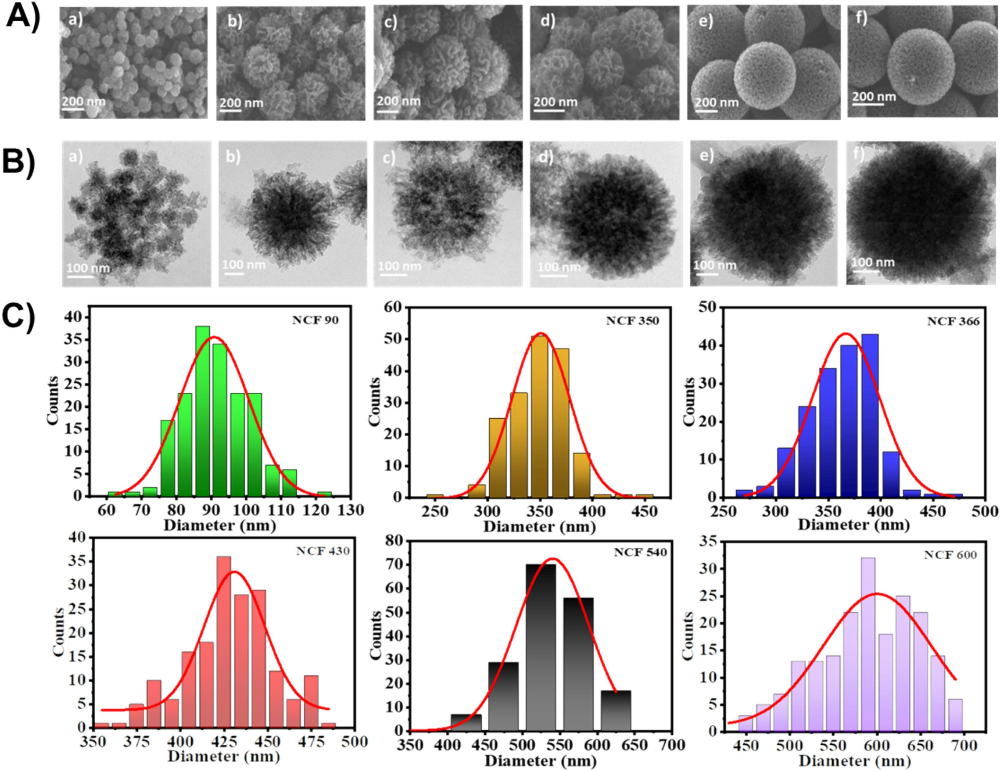

 Ultrathin, Unsinkable, Janus‑Faced Solar–Thermal Interfacial Evaporator for High‑Throughput Seawater Distillation and Solar‑Water Production Authors: Mohammed Aslam Villan, Amrutha Suresh, Mukund Misra, Cintia Naranjo Ruiz, Neil R. Cameron, Sandip K. Saha, Subramaniam Chandramouli Journal: Advanced Science Date: 21 October 2025 Pages: e11600 Read ↗
Photothermally Enhanced Ion‑Transport in Solid‑State, Non‑Faradic Energy Storage Devices for Sub‑Freezing Operability Authors: Mohammed Aslam Villan, Arnab Chowdhury, Bradyn J. Parker, Bhupesh Bhardwaj, Neil R. Cameron, Chandramouli Subramaniam Journal: Chemical Engineering Journal Volume: 500 Pages: 156617 Date: 15 November 2024 Read ↗
 Interplay of Physical and Textural Properties in Porous, Nanostructured Hard‑Carbons as Electrode Materials for Non‑Faradic Energy Storage Devices Authors: Mohammed Aslam Villan, Dipin Thacharakkal, Subramaniam Chandramouli Journal: Journal of Energy Storage Volume: 99 Pages: 113415 Date: 10 October 2024 Read ↗